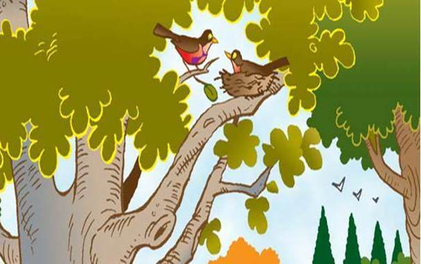

Deep within a well-forested park, there grew a tall and leafy oak tree. Its trunk was strong and its branches were thick and wide. On one of the lower branches sat a new nest. Two robins had chosen this place to start a home. Mama Robin had laid four beautiful blue eggs. Day and night she covered them with her body so they would stay cozy and warm. Papa Robin worked hard to find food for Mama Robin while the tended to the eggs.